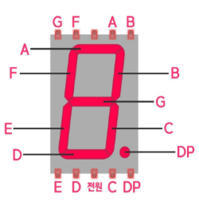

회로 기초
GND는-이고 보통 저항 달고 저항 끝을 그라운드에 연결 한다+극쪽은 아날로그, 디지털 핀에 다이렉트로 연결한다5V전압은+이다LED에 긴다리가+짧은다리가-이다LOW값은0VHIGH 값은5V버튼을 누르면 브레드 보드에 양쪽 칸이 모두 활성화버튼은 따로 음극, 양극을 따지지 않는다
플로팅 현상
- 디지털 핀의 전압이 HIGH 와 LOW를 왔다 갔다 하는 현상 즉 HIGH 도 LOW 도 아닌상태
- 디지털 핀을 입력으로 설정하면 아주 작은 전류가 흐르기에
그래서 평상시 전압을 LOW 또는 HIGH에 고정
풀다운
LOW 에 고정
버튼:5V에서 전류가 옴- 입력핀과 그라운드 핀이 저항을 사이에 두고 연결
- 안누르면 모든 작은 전류가 그라운드로 빠저 전압이 LOW 가 됨
풀업
HIGH 에 고정
버튼:5V에서 전류가 옴5V전원핀과 입력핀 사이에 저항을 둠5V전원선과 연결되에 HIGH 가 됨- 반대로 누르면 LOW
5V에 저항 있으면 풀업입력핀, 그라운드사이에 저항있으면 풀다운
아날로그
0V~5V사이를 왔다갔다 할 수 있는
- 입력은 입력핀에 꼿고
- 출력은 ~ 표시있는 데다 (3,5,6,9,10,11 핀)
PWM
디지털 기계가 아날로그 신호를 출력하는 방법
- 사람눈엔 10ms(100hz) 수준에 깜박임은 눈으로 감지가 안됨
- 예를 들어 led를 5초 키고 5초뒤 끈다면 계속 켜져있는거 같음
- 근데 이 켜짐과 꺼짐에 시간 비율을 잘 조정하면 밝기강도가 낮아지는 효과를 볼 수있음
- 이 비율을 표시하는 용어가 듀티 사이클 임
듀티 사이클
- 시간당
HIGH비중에 비율 - 아두이노 최대값은
255
채터링
스위치가 눌릴때 기계적인 진동에 의해 매우 짧은 시간동안 접점이 붙었다 때지는 현상
- 즉 여러번 눌린거 같은 효과를 가진다
- 이 때문에
토글구현 하는것이 힘들다
void loop() {
int mode = digitalRead(5);
if (mode) {
// 버튼을 누를때 여러번 눌리는 판정이라 수시로 바꿔버림
state = !state;
}
digitalWrite(10, state);
}디바운싱
- 짧은 시간동안의 버튼 상태 변화를 무시하여 채터링을 해결
- SW, HW 방법이 있음
로직을 통한 임시 해결
이전 상태 값과 비교하여 눌릴때만 작동하도록 한다
int mode = digitalRead(5);
// 이전값이 땐 상태고 현제 버튼을 누른 경우 발생되게
if (last == LOW && mode == HIGH) {
state = !state;
}
digitalWrite(13, state);
last = mode;- 이 경우 채터링으로 인한 오류가 존재함
polling 방식
한번 스위치를 읽고 일정시간 지난 뒤 한번 더 읽어 본다
int mode = digitalRead(5);
if (mode != last) {
// 사람 손에 눌린거라면 0.1만에 값이 달라질 수가 없기 떄문
delay(10);
mode = digitalRead(5);
}
// 나머지 코드는 위에랑 동일Interrupt 방식
아두이노가 보내는 이벤트로 처리
void setup() {
// Interrupt는 2, 3 번 핀만 사용 가능하다
attachInterrupt(digitalPinToInterrupt(2), change, RISING);
}
volatile int val9 = LOW;
void loop() {
digitalWrite(9, val9);
}
// _delay_ms 사용
void change() {
_delay_ms(50);
if (digitalRead(2) == LOW) return;
val9 = !val9;
// millis() 사용
void change() {
t_now = millis();
if ((t_now - t_prev) > 300) {
t_prev = t_now;
t_switch = !t_switch;
}
}-
2번인자 는 처리함수 이벤트가 발생하면 해당 함수 실행 -
3번인자 는RISING, FALLING, CHANGE, LOW사용가능RISING: 전압이HIGH로 바뀔때FALLING: 전압이LOW로 바뀔때CHANGE:HIGH,LOW가리지 않고
-
_delay_ms()함수 사용이유:delay()함수는 아두이노 자체에 주는 딜레이- Interrupt 가 호출되는 순간 작동을 안한다
_delay_ms()함수는 소프트웨어 적으로 주는 딜레이
-
volatile예약어- Interrupt에 의해 값이 바뀌면 그 값을 인식 못하는 경우가 있음
- 변수를 읽을 때 마다 항상 Ram 에 접근해서 읽어오게
어노드 / 케소드
어노드: LED 에 긴다리가 +케소드: LED 에 긴다리가 -
3색 LED는 저항 없이 바로 그라운드로 연결해도 된다 만일 어노드면
3.3V또는5V에 연결
7세그먼트

- 가운데 단자를 그라운드에 연결 (220 짜리 저항과 함께)
어노드 타입:- 키려면
LOW끄려면HIGH
- 키려면
케소드 타입- 키려면
HIGH끄려면LOW
- 키려면
Serial 통신
아두이노가 사용하는 통신 프로토콜
if (Serial.available()) {
content = Serial.readString();
Serial.print(content);
}함수 사용
Serial.begin(): 시리얼 사용 설정Serial.available(): int: 버퍼에 저장된 데이터 길이 반환Serial.read(): char: 맨 앞에 1바이트 읽음Serial.readString(): String: 전체 바이트 읽음
피에조 스피커
소리내는 스피커
tone()이후에 또 다른tone()이 들어갈 경우 delay 안주면 연속적으로 됨- 이게 무슨 소리냐면 재생시간은 아두이노 시간 흐름에 영향을 안 받음
- 재생시간을 1000을 준다 해서
tone()함수가 1000 동안 대기 하는 게 아님
함수 사용
tone(핀, 소리값, 재생시간): 재생시간 동안 소리값 소리를 냄
noTone(핀): 해당핀 소리 끔
초음파 센서
초음파를 사용해 사물이나 벽까지에 거리를 알려주는
VCC:5VGND:GND- 나머지는 디지털 핀
동작 원리
Trig부분에서 초음파를 보냄- 벽에 부딪히면 초음파가 반사
Echo부분으로 초음파는 돌아올 곳으로 설정Echo부분이 초음파를 받으면 전압이 HIGH 가 됨
이 돌아오는 시간을 계산 하면 거리를 알 수 있다 물체와의 거리 (cm) = 왕복 소요 시간(㎲) / 58.3
digitalWrite(2, HIGH);
delayMicroseconds(10);
digitalWrite(2, LOW);
long duration = pulseIn(3, HIGH);
long distence = duration / 58.2;함수 사용
delayMicroseconds(값): 마이크로초 딜레이pulseIn(핀, LOW|HIGH): LOW|HIGH 되는 시간 초 계산
모터
DC 모터
DC(직류) AC(교류)
전기 → 역학적 에너지
-
특징:- 회전속도 방향제어 용이
- 기동 토크가 큼
- 작은 모터로 힘을 내려면 기어박스 사용
-
사용:- 자동차/보트 무선조종
-
모터 드라이버랑 연결해서 사용
void loop() {
// a, b = 좌우 HIGH 로 준 방향으로
// 모터 드라이버에 IN 방향
digitalWrite(a,HIGH);
digitalWrite(b,LOW);
// 속도를 PWM 으로 결정 모터 드라이버에 ENA
analogWrite(speed,200);
delay(1000);
}L298N 모터 드라이버
서브모터
전압입력 → 회전각
특징:- DC 모터와 동일
- 움직임 제어를 위한 제어부 포함
사용:- 비행기 날개
함수 사용
include “Servo.h”
servo.attach(핀): 서브모터 사용 설정 (setup에)servo.write(값): 해당 각도로 설정
함수정리
pinMode(핀, input | output): 핀모드 설정digitalWrite(핀, 값): 디지털 쓰기digitalRead(핀, 값): 디지털 읽기analogRead(핀, 값): 아날로그 읽기analogWrite(핀, 값): 아날로그 읽기delay(): 딜레이 주기randomSeed(값): 랜덤 시드 설정random(최대값): 최대값 -1 값중 랜덤값millis(): 아두이노 상대 시간 밀리초 반환